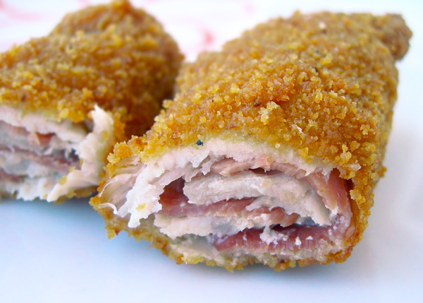

Ingredientes
- Filetes de lomo de cerdo
- Jamón serrano, con tocino
- Sal
- Huevo
- Perejil
- Ajo
- Pan rallado
- Aceite de oliva virgen extra
Cómo hacer flamenquines paso a paso
Preparamos los filetes de cerdo
- Machacamos los filetes con una maza y los vamos aplanando.
- Ponemos unas tiras de jamón en el centro o una loncha de jamón estirada sobre los filetes.
Empanamos los flamenquines
- Enrollamos, pasamos por huevo batido, al que ponemos un poco de sal, perejil y ajo picado.
- Después pasamos por pan rallado y así con todos.
Freímos los flamenquines cordobeses
- Freímos en abundante aceite caliente y listos para comer estos deliciosos flamenquines.
